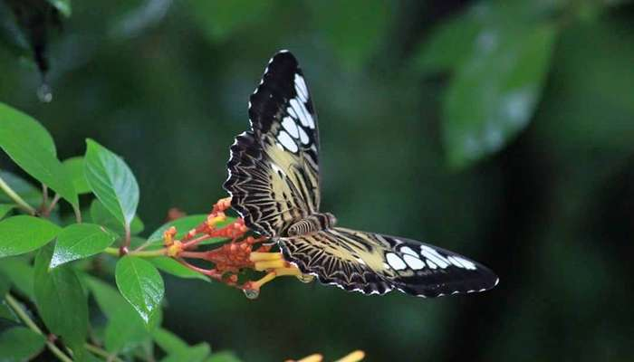

Places to visit in Kollam

Kollam has been on the route map of spice traders for a very long time. Legendary explorers like Ibn Battuta to Marco Polo have talked about the prominence of Kollam district for centuries. Endowed with a long and scenic coastline, Kollam has many peaceful and scenic places to offer. Since it is located on the banks of Ashtamudi Lake, it is also one of the best places to go cruising in the backwaters. Here are some places to visit in Kollam that you can’t skip on your trip.
- Palaruvi Waterfalls
- Ashtamudi Lake
- Jatayu’s Earth Centre
- Thenmala Deer Park 
- Kollam Adventure Park

Palaruvi translates to “milky streams”. This is a stunning waterfall located on the Kollam-Shencottah Road, which falls from 300 feet. An ideal time to visit this place is from June to January. Even if you visit this place on a low-season, it is a beautiful picnic spot. The 32nd highest waterfall in India, it is also known to have Ayurvedic properties.
Location:Kollam, Kerala

This lake is the most visited lake and backwater in the state. Lush green waterways lined with palm and coconut trees, there’s no better place to start exploring Kollam that is considered to be one of the best Kollam tourist places. Ashtamudi means ‘Eight Coned’ in Malayalam. A houseboat trip to this lake is among the most popular things to do in Kollam.
Location:Kollam, Kerala.

For the best of Kollam sightseeing , this is a very recent construction, the Jatayu Nature Park is a rock-themed park. The adventure park has 6D theatre an audio-visual digital room, cable car and much more. This is built to promote mythology and adventure tourism. This giant bird statue located on a hill top is certainly unique and something that shouldn’t be missed.
Location:Kollam, Kerala
This park is built within the Kallada river side forest. You can spot many types of deer here from the Barking deer, Spambar Deer, Spotted deer, Axis deer and many more. Apart from that, there’s also a children’s park and a tree house as well that you can explore!
Location:Kollam, Kerala
.jpg)
Relax and unwind in the lap of nature, breathe in fresh air as this park is an ideal place to find respite amidst lush greenery and recreational activities amongst others. It is an urban park that is located beside the backwaters of Ashtamudi and can be a favourite for locals to come out and enjoy a picnic with their loved ones and to enjoy the adventure activities. It is one of the best tourist places in Kollam for a fun day out.
Location:Kollam, Kerala